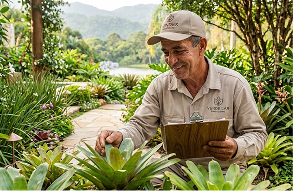
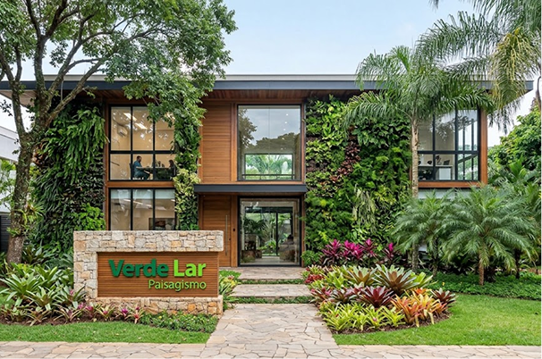

Sobre a Verde Lar Pasaigismo

A jornada da Verde Lar Paisagismo começou com um sonho simples e uma paixão vibrante: transformar ambientes através do contato com a natureza. Acreditamos que um jardim vai muito além da estética — ele é um refúgio de bem-estar, equilíbrio e renovação para qualquer espaço.no coração do interior baiano a partir do sonho de seu fundador, Germino, que cresceu observando o cuidado minucioso com que sua família cultivava pequenos canteiros medicinais e ornamentais no quintal de casa. Percebendo como o contato diário com as plantas trazia paz e transformação para o lar, surgiu o desejo de levar essa mesma experiência para a vida de outras pessoas. O que começou em 2018 como um trabalho artesanal e independente de manutenção de pequenos jardins residenciais rapidamente ganhou força e reconhecimento pela dedicação em cada detalhe.

Nossa missão é prestar serviços de excelência em jardinagem, paisagismo e conservação ambiental, oferecendo um atendimento inteiramente personalizado que crie espaços verdes capazes de elevar a qualidade de vida, o conforto e a satisfação absoluta de quem confia em nosso trabalho.
Fundada com o ideal de transformar ambientes vazios ou sem vida em verdadeiras obras de arte naturais, a nossa empresa especializou-se em entregar soluções completas e altamente personalizadas. Unimos a jardinagem artesanal ao paisagismo funcional, passando por serviços rigorosos de limpeza, conservação e manejo de áreas verdes.